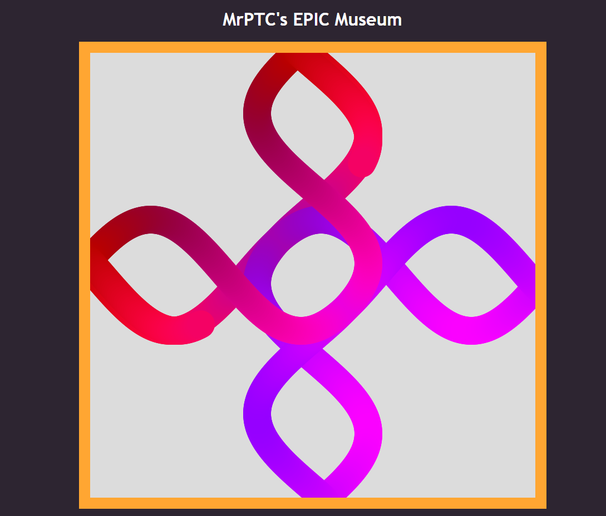
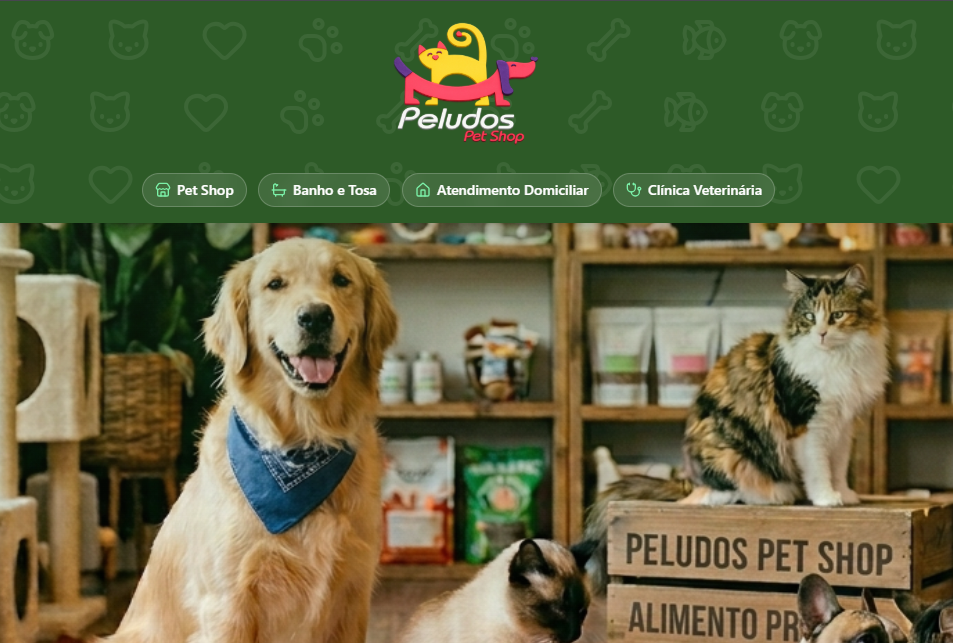
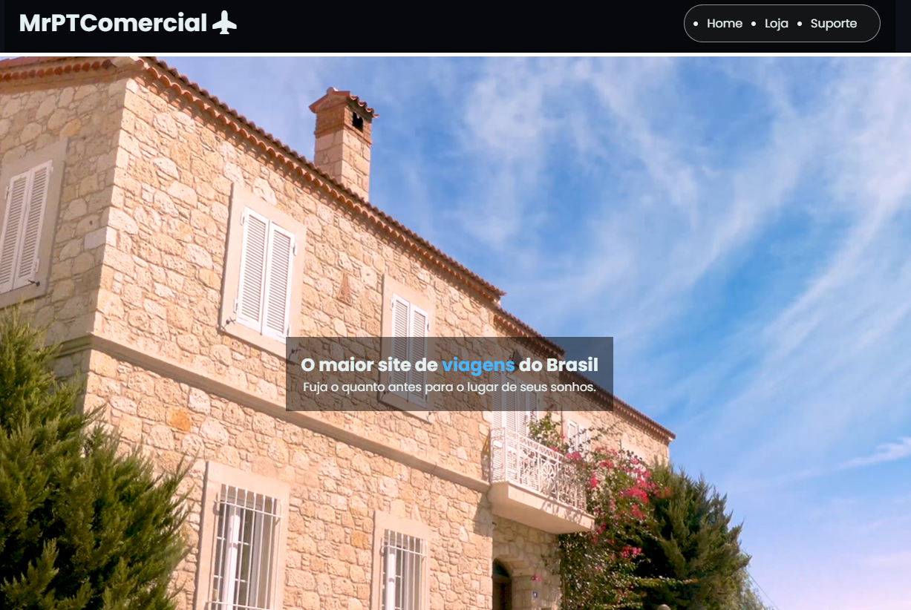
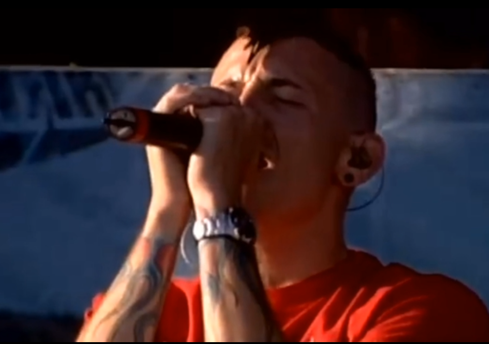

PTCMuseu
Site feito para uma amostra de arte interativa no Senac,
utilizando VScode e P5JS

PeludosPetshop
Site institucional da PeludosPetshop,
utilizando VScode e vercel/v0

Viagens
Site teste de viagens feito na faculdade,
utilizando VScode(css,javascript)

Video
Video baseado em timing
utilizando CapCut